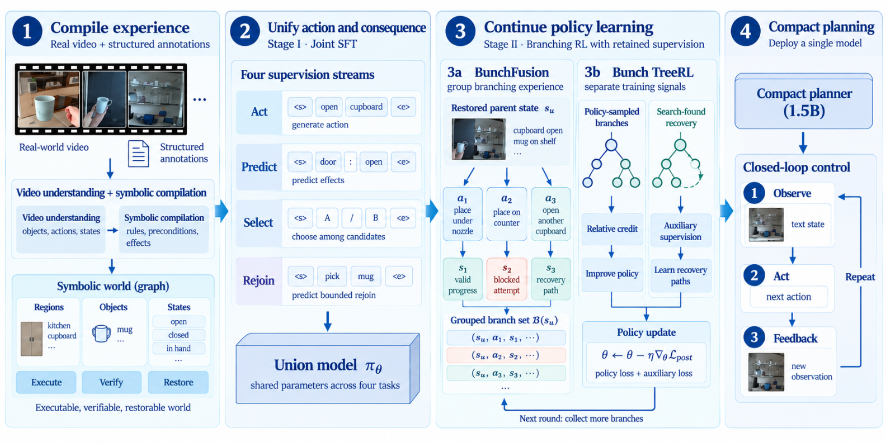
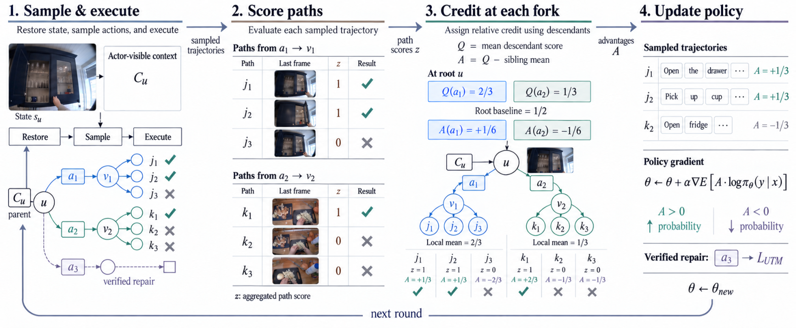
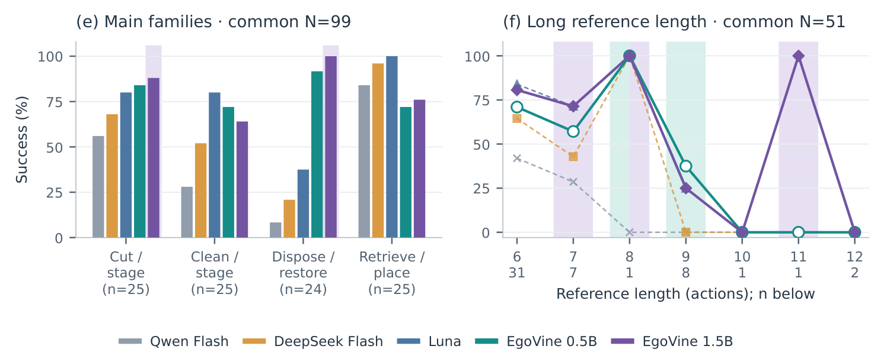

arXiv 2026
EgoVinePost-Training with Branching Experience Compiled from Real-World Videos
A cooking video records one way through a task. EgoVine turns it into a world where a planner can try other actions, see their consequences, and learn how to recover.
Animated walkthrough of the paper’s branch-learning diagram.
Beyond the recorded trajectory
To retrieve a bag and leave its cabinet closed, the planner may first have to open the cabinet. That action breaks a final goal condition temporarily, yet it makes the rest of the task possible.
With Ego2World, annotations from real egocentric videos become rules for an executable symbolic environment. The executor tracks the full world state. The planner acts from a textual goal, visible facts, and permitted interaction history. During training, EgoVine restores decision states and checks what actually follows each alternative, including mistakes and recovery paths beyond the recording.
Same decision, different futures
The planner is holding a clean, dry bottle. It must stage the bottle at microwave_03, then retrieve and place a bag. Both navigation choices are valid and leave goal progress unchanged at the first step.
Direct route. The first action reaches the start of the verified seven-action continuation.
- Navigate to
microwave_03 - Navigate to
microwave_03to rejoin - Place the bottle
- Navigate to the bag
- Open the cupboard
- Retrieve the bag
- Close the cupboard
- Navigate to the destination
- Place the bag
Based on a replayed training prefix in Appendix E. Both paths completed the formal goal. The detour adds a connector before the same seven-action continuation.
The executable learning loop


Union aligns four targets
Act learns what to do. Predict learns applicability and effects. Select compares candidate actions. Rejoin predicts whether a bounded connector can reach a checked route. A verified connector also supplies action targets.
BunchFusion restores the decision
Alternatives start from the same saved state, visible context, goal and remaining budget. Sampled continuations reveal longer-term effects. A separate bounded search checks whether a repair actually completes the task.
The planner collects again
Bunch TreeRL assigns relative credit within each fork using the outcomes of sampled continuations. Verified repairs supply supervised targets. After the update, the planner visits new states and exposes new mistakes to learn from.
See how branch outcomes assign credit


Planning and recovery
On the shared benchmark, EgoVine-1.5B leads Main and ties Luna on Long. EgoVine-0.5B leads the observed Recovery and Deviation scores. Each model receives the same permitted observations, executable actions and 12-decision allowance within a panel.
| Planner | Main 99 tasks | Long 51 tasks | Recovery 100 cases | Deviation 100 cases |
|---|---|---|---|---|
| Qwen Flash | 44.4% | 29.4% | 46.0% | 44.0% |
| DeepSeek Flash | 59.6% | 47.1% | 61.0% | 60.0% |
| Luna | 74.7% | 66.7% | 69.0% | 67.0% |
| EgoVine-0.5B | 79.8% | 58.8% | 76.0% | 77.0% |
| EgoVine-1.5B | 81.8% | 66.7% | 66.0% | 66.0% |
Breakdowns by task family and reference length


Recovery experience made the largest difference
In a separate 0.5B training-stage comparison, adding recovery-expanded supervision raised success from 63.6% to 79.6%. The released checkpoint reached 81.1% after the subsequent policy update. All stages were evaluated on the same 338 episodes across two seeds.
Bounded search found 401 replay-verified repairs from 487 saved contexts, including 200 from episodes the actor ultimately failed.
The experiments use symbolic worlds compiled from real videos. Executable rule coverage determines which alternatives can be explored. Transfer to new video sources remains an open question.